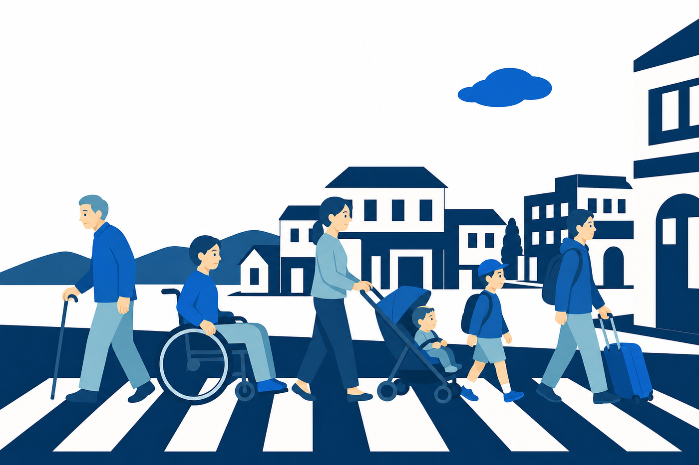
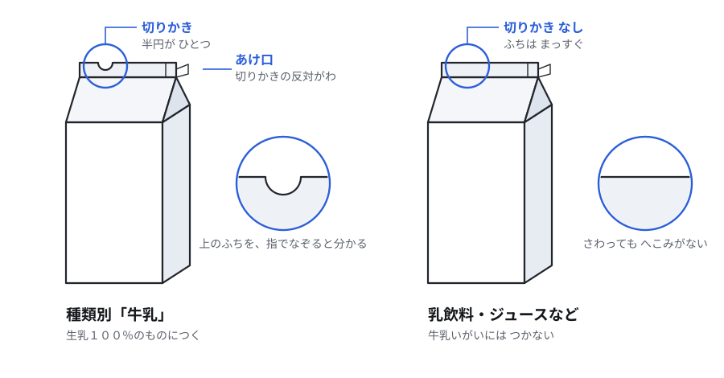
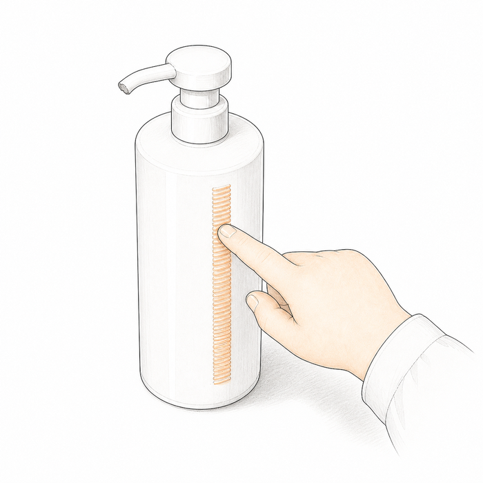
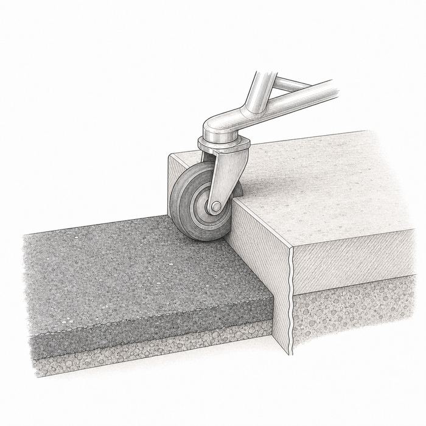
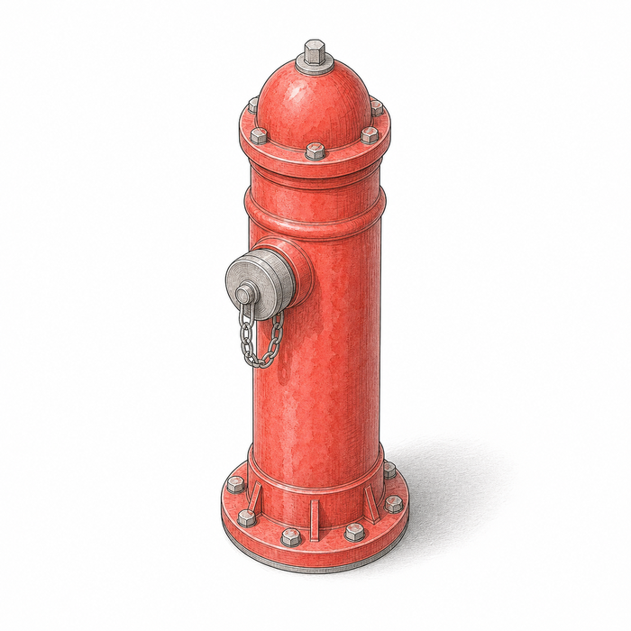
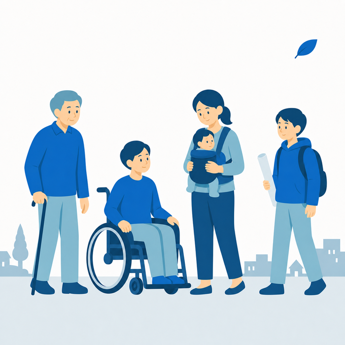

そして、わたしたちにはなにができるのだろう。まずはじぶんの「安心・安全なまち」をおもいうかべてみよう。しらべていくうちに、そのこたえはかわっていくよ。このサイトは、きみのしらべものをたすけるどうぐばこ。

もし急に大雨がふってきたら、自分はだいじょうぶ？ おばあちゃんは？ 車いすの人は？ 日本語がまだわからない人は？
ある日とつぜん、家族や自分が「こまるがわ」になることだってある。だからこれは「だれかのため」の勉強じゃない。ぜんいんの問題なんだ。
このプロジェクトでは、まちをしらべ、本人や専門家に話を聞き、さいごは大人に本気の提案をとどけます。「ふくしって大事だね」でおわらせない。
体験の日にいきなりやるんじゃない。その前にしらべておくと、当日に聞けることがまったくちがってくる。それぞれのページを先に読んでおこう。
6つの点でできたもじ。どこでつかわれている？ つくっているのはだれ？
09 / 09手とかおでつたえることば。耳のきこえない人にとどけるしくみは？
09 / 30のる。おす。目をとじて歩く。まちのなにがかべになる？
この体験は「たいへんさをあじわう」ためのものじゃない。目や耳や足の不自由な人は、まいにちこまりながらくらしているわけじゃない。道具やしくみやなれで、ふつうにくらしている。
こまるのは、まちのほうにりゆうがあるとき。だんさ、せまい通路、音だけのあんない、字だけのあんない。だからふりかえりでさいごにかんがえるのは、いつもこれ。「まちのなにをかえればいいんだろう？」
「バリアフリー」は、あとから段差などのかべをなくすこと。「ユニバーサルデザイン」は、さいしょから、できるだけ多くの人がつかえるようにかんがえてつくること。にているけれど、スタートがちがう。


ボトルのよこのギザギザ。目をつぶっていても、シャワー中でも、リンスとまちがえない。

元気な足ならまたげる段差も、車輪には大きなかべになる。

まちにかくれているあんぜんのそなえ。通学路にいくつある？

おとしより、赤ちゃんづれ、外国から来た人。みんな同じまちに住んでいる。
2026年7月28日の夕方、熊本県で大きな地震がおきた。気象庁はこれを「令和8年熊本地震」となづけた。きみたちも、ゆれをかんじたかもしれない。
| おきた日 | 2026年7月28日午後4時27分 |
|---|---|
| 大きさ | マグニチュード7.1、ふかさ約16キロメートル |
| いちばん強くゆれた所 | 熊本県宇城市・氷川町で震度7 |
| 福岡県でも | 柳川市・大川市で震度5弱 |
| つなみ | 有明海・八代海につなみ注意報（同じ日の夜にかいじょ） |
| ひなん | ひなん所 506か所に 9,186人（7月29日朝の時点） |
| 水と電気 | 水道が約84,000戸でとまった。停電は最大約48,280戸 |
出典：気象庁「令和8年熊本地震ポータルサイト」、内閣府（防災担当）の被害状況報告（7月29日7時現在）。数はこれから変わることがあります。
水がでない。電気がつかない。たくさんの人がたいいくかんにあつまる。そのとき、こまり方は人によってちがう。
耳のきこえない人：「つぎのはいきゅうは 3時です」という放送がとどかない。→ 手話のページへ
目の不自由な人：はり紙のおしらせがよめない。いつもとちがうゆかに、ものがおいてある。→ 点字のページへ
車いすの人：たいいくかんのトイレに入れない。ゆかにふとんをしくと、うつれない。→ 車いすのページへ
日本語がまだの人：「よしんにちゅうい」のいみがわからない。
ふだんのまちでこまることは、さいがいのときにはもっと大きくなる。ぎゃくに、ふだんからだれもがくらしやすいまちは、さいがいにもつよい。9月のふくし体験は、この地震の話とつながっている。
そのうえで「にげるのがむずかしい人はだれだろう」とかんがえる。じゅんばんをまちがえない。
きみのまちのハザードマップを、おうちの人といっしょに見てみよう。→ かさねるハザードマップ（国土交通省）
なつ休みにあつめた発見を、この 4つの目でならべなおしてみよう。まちたんけんのときも、この目で見る。
だれでもつかえるように、はじめから作られたもの。きざみ、スロープ、絵の案内。
おばあちゃんなら？ 車いすの人なら？ 小さい子なら？ 段差、せまい歩道、くらい道。
ひなん場所のかんばん、消火せん、ハザードマップ。まちのそなえはどこにある？
どんな人がくらしている？ おとしより、赤ちゃんづれ、外国から来た人。
気づいたこと、「こうしたらいいんじゃない？」「なんでだろう？」。どんな小さなことでもいい。思いついたときに、ここにのこしておこう。
メモはこの端末の中だけにのこります（だれかに送られることはありません）。自分や友だちの名前はかかないでね。